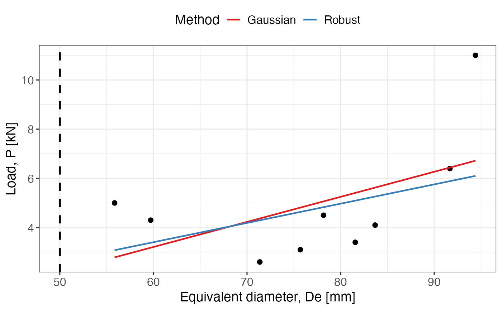

Calculates different possible values of UCS based on point load test measurements. It performs several regressions (Gaussian and robust), and also calculates corrected value based on the point load index.
References
ASTM (1995). Standard Test Method for Determination of the Point Load Strength Index of Rock.
See also
Other rock mechanics:
Barton_Choubey(),
Hoek_Brown()
Examples
W = c(70.0,95.0,80.0,90.0,98.0,110.0,100.0,100.0,110.0)
D = c(40,55,60,50,25,60,40,70,50)
P = c(4.3,3.4,4.5,3.1,5.0,6.4,2.6,11,4.1)
UCS(W = W, D = D, P = P)
#> $Graph
#> `geom_smooth()` using formula = 'y ~ x'
#> `geom_smooth()` using formula = 'y ~ x'

#>
#> $Summary
#> Method I50 [MPa] UCS [MPa]
#> 1 Gaussian 0.69 15.83
#> 2 Robust 0.82 18.94
#> 3 Corrected (mean) 1.02 23.41
#> 4 Corrected (median) 0.90 20.71
#>